volleyballworld
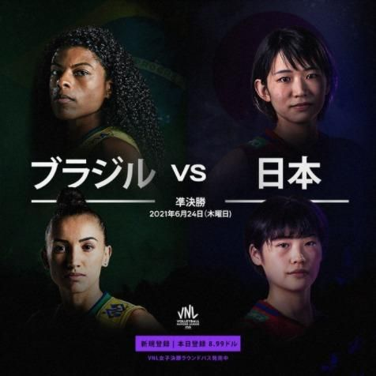
volleyballworld ブラジル vs 日本. Made for fans in Japan.
Global sports social media & creator consultant
I build social and creator strategies and award-winning campaigns for brands, leagues, rights holders and athletes. Twelve years across sport, entertainment and culture, from Weibo to TikTok in the US, UK and APAC, with one aim: to reach fans everywhere in a way that feels made for them.
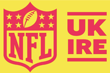
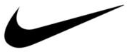
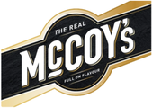
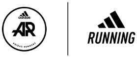
Selected work
Four of my most successful campaigns across adidas Runners, NFL UK & Ireland, Tottenham Hotspur and Volleyball World, built to connect with fans and deliver measurable results.
Giving communities a stronger voice.
A global running community spanning 49 countries and 76 local chapters, but a fragmented communications ecosystem meant much of its local impact was going unseen.
A global editorial and communications strategy brought greater consistency and visibility across the network, while giving communities a stronger voice.
Distinctly British, without losing what makes the NFL, the NFL.
The NFL was already a fixture of the UK sports calendar. The challenge: make it feel distinctly British without losing what makes the NFL, the NFL.
“A Different League” introduced a new UK positioning and visual identity that moved beyond the traditional red, white and blue across social, PR, broadcast and hospitality.
The launch partnered with London vintage tastemakers Duke’s Cupboard, bringing the platform to life through creators, social content and the debut of the NFL Origins collection.
A cultural moment, not just a product reveal.
Annual team kit reveals have historically struggled to cut through. The 2024/25 launches needed to make each drop feel like a cultural moment, not just a product reveal.
The creative brought Home, Away and Training to life through three hero films, key visuals and e-commerce content, featuring Son Heung-min, James Maddison, Bethany England, Micky van de Ven and more.
A social-first approach packed with cultural references and Easter eggs to reward fans, spark conversation and give each launch a world beyond the shirt itself.
Making the action feel just as alive online.
With fans locked out of stadiums for the 2021 Volleyball Nations League due to COVID-19 restrictions, the challenge was to make the action feel just as alive online.
A global social, paid and production strategy brought fans closer to the competition, with on-the-ground content built for real-time engagement and market-specific storytelling for audiences in Japan.
The result was a more immersive digital fan experience, connecting global audiences to the players, personalities and moments beyond the court.
Speaking & leadership
On the business of sport, the rooms where decisions get made, and how global social strategy actually works.
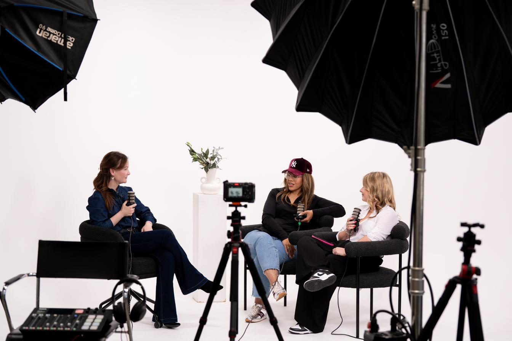
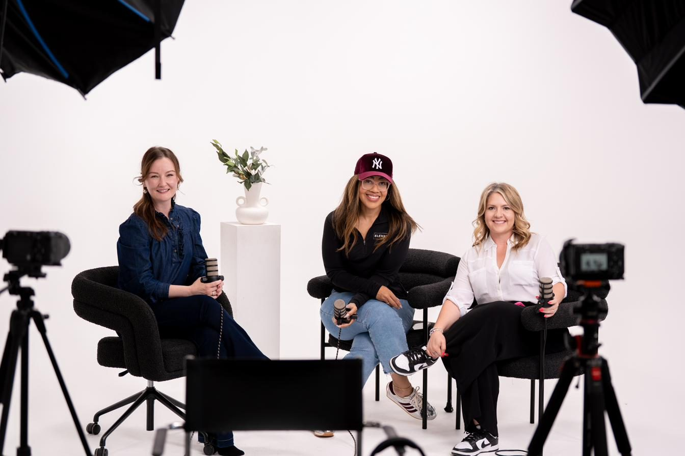
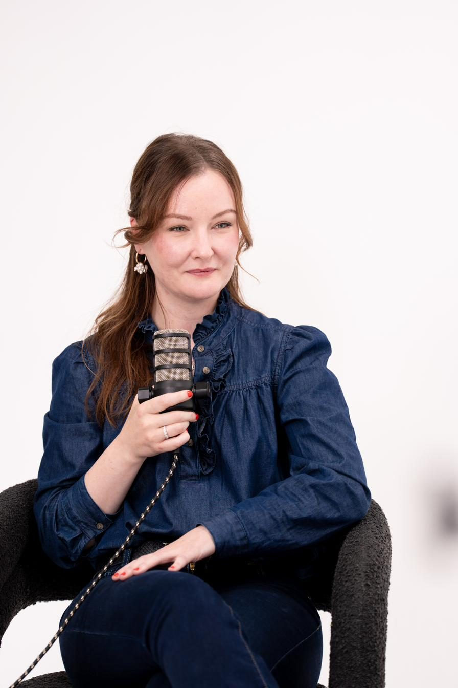
Elevate Collection PodcastOn set
Podcast
The Elevate Collection Podcast documents the business, power and cultural infrastructure behind professional sports and high-trust industries. It explores the rooms where decisions are made, capital moves, and legacy is built.
Watch on YouTube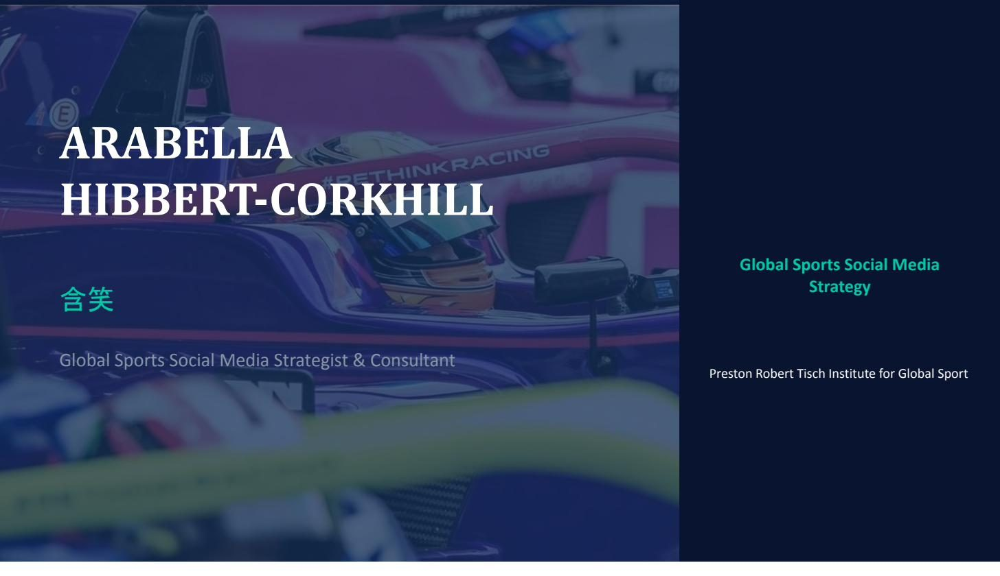
Guest lecturer
I teach global sports social media strategy to the next generation of sports business leaders. The session covers:
Reaching fans everywhere, in a way that feels like it was made for them specifically.
About
My interest in social media started in 2008, when I moved to Beijing during the Olympics to study Mandarin. Western platforms were being blocked and replaced by an entirely separate ecosystem, and the global brand playbook simply stopped working.
That lesson has shaped everything since: cultural fluency beats translation, every platform needs its own approach, and global scale is won one local audience at a time. Today I work independently with brands, rights holders, athletes and franchises as a strategy lead.
Markets US, UK, EU, APAC, LATAM
Languages English, Mandarin
Lived UK, China, Mexico, USA
Projects
A decade of work across creator programmes, AR experiences, product launches, documentaries, global campaigns, China market strategy, market entry and more, spanning agency and client-side roles.
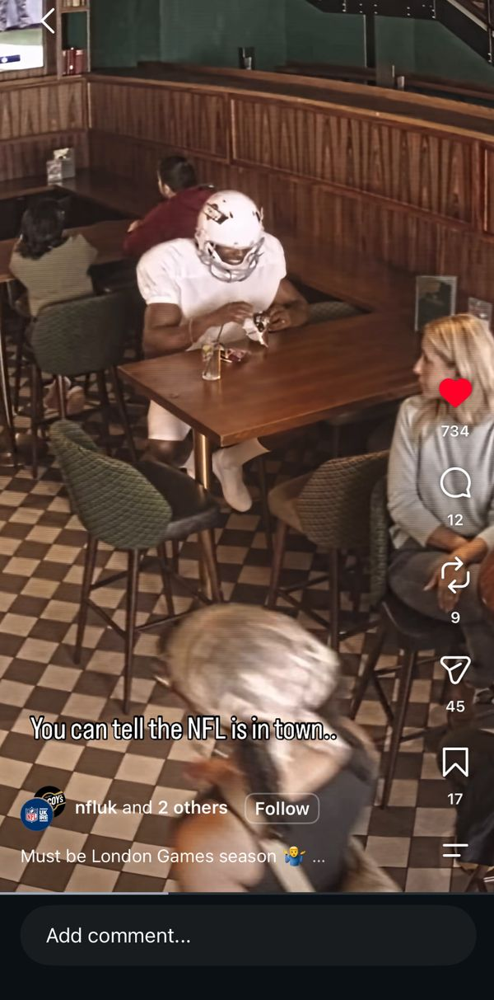
Social content strategy and development for the Official Savoury Snack of NFL UK&IRE: a TV personality and athlete in full NFL uniform, dropped into the most British moments we could find.
Watch the Reel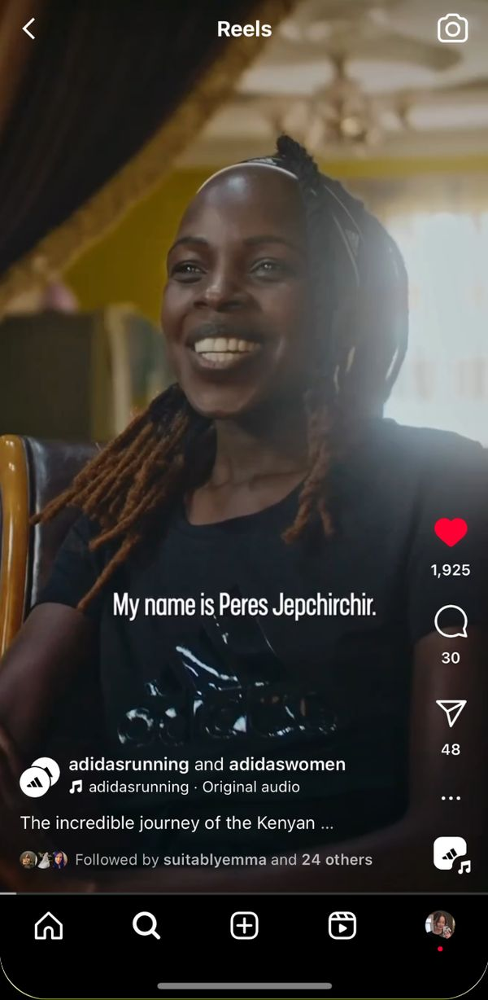
An intimate documentary on marathon champion Peres Jepchirchir, filmed in Iten, Kenya, featuring Haile Gebrselassie and Mary Keitany, 7 athlete toolkits and seasonal adidas Running content.
Watch the film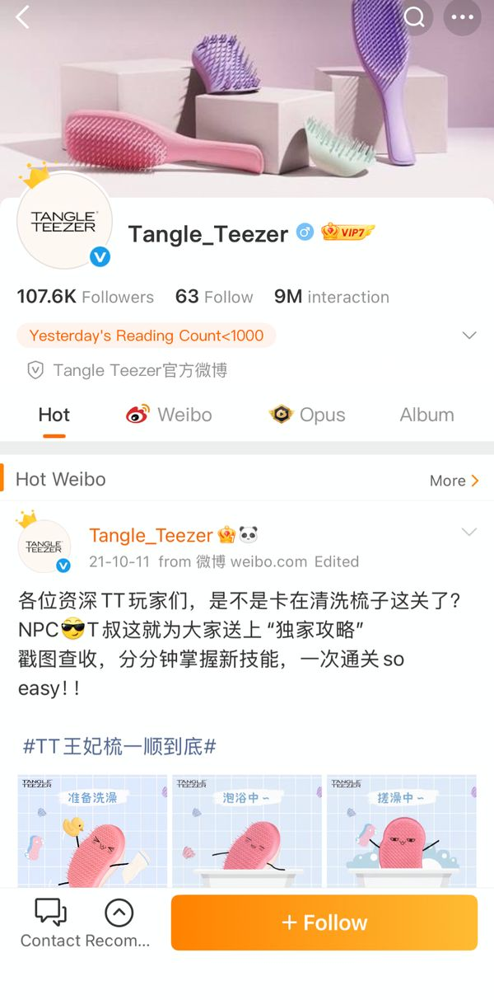
The brand’s first China social strategy and China-exclusive products helped establish the market as its second-largest globally.
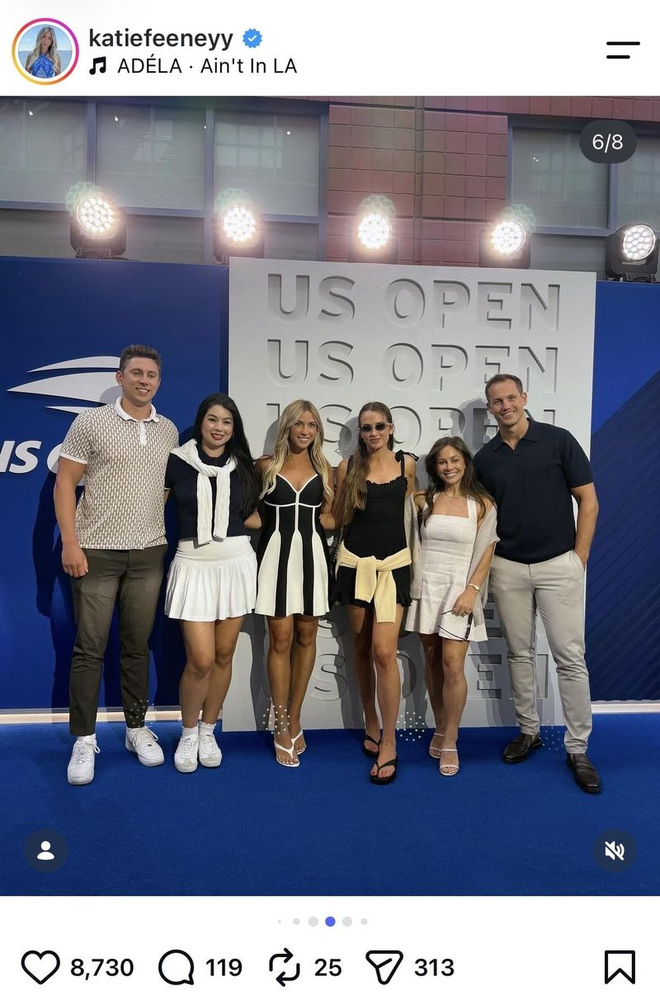
Shaped the format for a two-day summit with creators nominated by Twitch, TikTok, Meta, Snapchat and YouTube during US Open Fan Week, then authored the white paper behind the Tour’s first formal framework for working with creators.
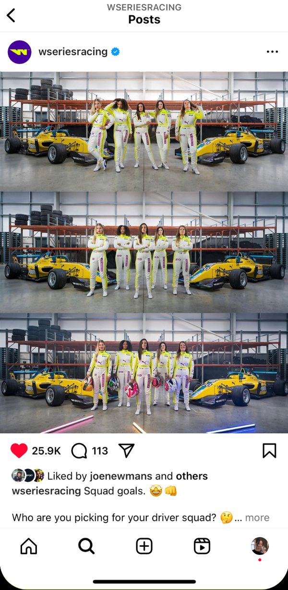
2021 social strategy, race-weekend content and community management, alongside account growth and a partnership with PUMA’s #SheMovesUs campaign.
Watch the NYC pop-up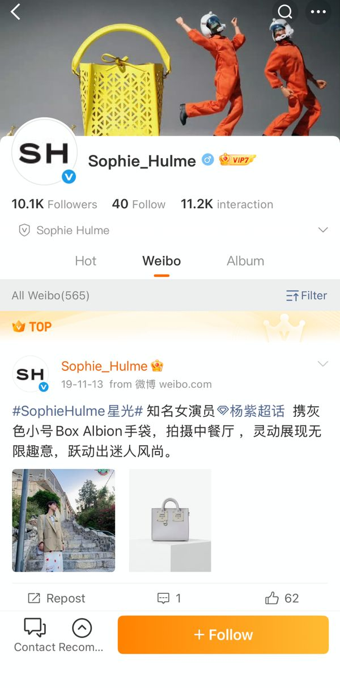
Developed and implemented the brand’s China social strategy, including content creation and a KOL-led Weibo launch. Developed China-exclusive products and delivered the market launch of Sophie Hulme in China.
Read in WWD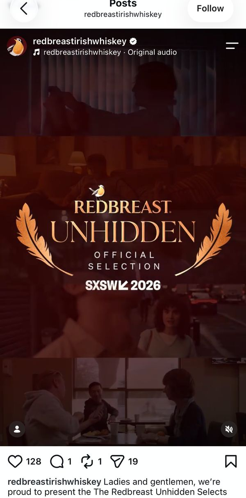
Film platform planning, partnership, talent and campaign strategy for a five-year film and brand collaboration built to drive fame through cultural relevance.
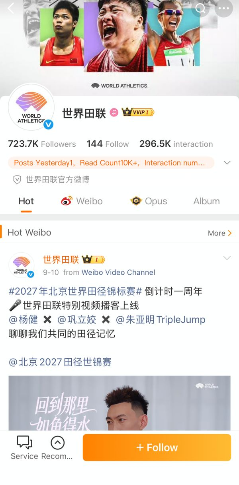
Digital and paid social strategy around the Games, plus China-specific brand guidelines, a revived Weibo account and World Athletics’ first WeChat channel.